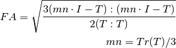
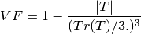

tract_querier.tensor.scalar_measures¶
Functions
tract_querier.tensor.scalar_measures.axial_diffusivity(evals) |
Taken from dipy/reconst/dti.py |
tract_querier.tensor.scalar_measures.eigenvalues(...) |
Eigenvalues of the tensors |
tract_querier.tensor.scalar_measures.fractional_anisotropy(...) |
Fractional Anisotropy (Basser et al.) measure computed as |
tract_querier.tensor.scalar_measures.fractional_anisotropy_from_eigenvalues(evals) |
Taken from dipy/reconst/dti.py |
tract_querier.tensor.scalar_measures.geodesic_anisotropy(evals) |
Taken from dipy/reconst/dti.py |
tract_querier.tensor.scalar_measures.mean_diffusivity(evals) |
Taken from dipy/reconst/dti.py |
tract_querier.tensor.scalar_measures.radial_diffusivity(evals) |
Taken from dipy/reconst/dti.py |
tract_querier.tensor.scalar_measures.tensor_contraction(...) |
Return the contraction of each tensor pair |
tract_querier.tensor.scalar_measures.tensor_det(...) |
Determinant of a tensor array |
tract_querier.tensor.scalar_measures.tensor_trace(...) |
Trace of each tensor |
tract_querier.tensor.scalar_measures.volume_fraction(...) |
Volume Fraction (Basser et al.) measure computed as: |
Anisotropy measures from tensor operations
-
tract_querier.tensor.scalar_measures.fractional_anisotropy(tensor_array)[source]¶ Fractional Anisotropy (Basser et al.) measure computed as

-
tract_querier.tensor.scalar_measures.volume_fraction(tensor_array)[source]¶ Volume Fraction (Basser et al.) measure computed as:
